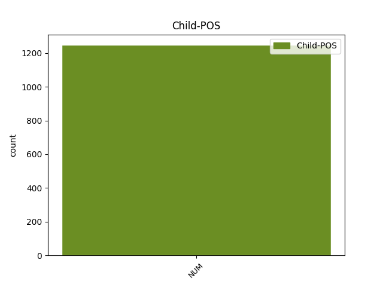

Distribution of features within this leaf

Agreement Rules sorted by frequency.
- When the dependent token is the modifer(mod) of the head token, and the head token is NOUN and the dependent token is NUM.
1 Мы _ _ _ _ 0 _ _ _
2 живем _ _ _ _ 0 _ _ _
3 менее _ _ _ _ 0 _ _ _
4 чем _ _ _ _ 0 _ _ _
5 в _ _ _ _ 0 _ _ _
6 сорока сорок NUM _ Case=Loc 7 mod _ _
7 километрах километр NOUN _ Animacy=Inan|Case=Loc|Gender=Masc|Number=Plur 0 _ _ _
8 от _ _ _ _ 0 _ _ _
9 Москвы _ _ _ _ 0 _ _ _
10 , _ _ _ _ 0 _ _ _
11 но _ _ _ _ 0 _ _ _
12 поблизости _ _ _ _ 0 _ _ _
13 нет _ _ _ _ 0 _ _ _
14 железной _ _ _ _ 0 _ _ _
15 дороги _ _ _ _ 0 _ _ _
16 , _ _ _ _ 0 _ _ _
17 да _ _ _ _ 0 _ _ _
18 и _ _ _ _ 0 _ _ _
19 шоссе _ _ _ _ 0 _ _ _
20 от _ _ _ _ 0 _ _ _
21 наших _ _ _ _ 0 _ _ _
22 мест _ _ _ _ 0 _ _ _
23 далековато _ _ _ _ 0 _ _ _
24 , _ _ _ _ 0 _ _ _
25 потому _ _ _ _ 0 _ _ _
26 и _ _ _ _ 0 _ _ _
27 лес _ _ _ _ 0 _ _ _
28 у _ _ _ _ 0 _ _ _
29 нас _ _ _ _ 0 _ _ _
30 хороший _ _ _ _ 0 _ _ _
31 , _ _ _ _ 0 _ _ _
32 чистый _ _ _ _ 0 _ _ _
33 , _ _ _ _ 0 _ _ _
34 не _ _ _ _ 0 _ _ _
35 израненный _ _ _ _ 0 _ _ _
36 любителями _ _ _ _ 0 _ _ _
37 пиршеств _ _ _ _ 0 _ _ _
38 на _ _ _ _ 0 _ _ _
39 лоне _ _ _ _ 0 _ _ _
40 природы _ _ _ _ 0 _ _ _
41 . _ _ _ _ 0 _ _ _
1 В _ _ _ _ 0 _ _ _
2 радиусе _ _ _ _ 0 _ _ _
3 трех три NUM _ Case=Gen 0 _ _ _
4 - _ _ _ _ 0 _ _ _
5 пяти пять NUM _ Case=Gen 3 mod _ _
6 километров _ _ _ _ 0 _ _ _
7 вокруг _ _ _ _ 0 _ _ _
8 теплостанций _ _ _ _ 0 _ _ _
9 и _ _ _ _ 0 _ _ _
10 обогатительных _ _ _ _ 0 _ _ _
11 фабрик _ _ _ _ 0 _ _ _
12 погибло _ _ _ _ 0 _ _ _
13 все _ _ _ _ 0 _ _ _
14 живое _ _ _ _ 0 _ _ _
15 , _ _ _ _ 0 _ _ _
16 погибла _ _ _ _ 0 _ _ _
17 трава _ _ _ _ 0 _ _ _
18 . _ _ _ _ 0 _ _ _
1 Перепад _ _ _ _ 0 _ _ _
2 давлений _ _ _ _ 0 _ _ _
3 совсем _ _ _ _ 0 _ _ _
4 невелик _ _ _ _ 0 _ _ _
5 - _ _ _ _ 0 _ _ _
6 не _ _ _ _ 0 _ _ _
7 более _ _ _ _ 0 _ _ _
8 шести шесть NUM _ Case=Gen 9 mod _ _
9 десятых десятый ADJ _ Case=Gen|Degree=Pos|Number=Plur 0 _ _ _
10 атмосферы _ _ _ _ 0 _ _ _
11 при _ _ _ _ 0 _ _ _
12 угле _ _ _ _ 0 _ _ _
13 подъема _ _ _ _ 0 _ _ _
14 до _ _ _ _ 0 _ _ _
15 трех _ _ _ _ 0 _ _ _
16 градусов _ _ _ _ 0 _ _ _
17 . _ _ _ _ 0 _ _ _
1 - _ _ _ _ 0 _ _ _
2 Давайте _ _ _ _ 0 _ _ _
3 - _ _ _ _ 0 _ _ _
4 ка _ _ _ _ 0 _ _ _
5 уходите _ _ _ _ 0 _ _ _
6 отсюда _ _ _ _ 0 _ _ _
7 , _ _ _ _ 0 _ _ _
8 пока _ _ _ _ 0 _ _ _
9 нам мы PRON _ Case=Dat|Number=Plur|Person=1 0 _ _ _
10 обоим оба NUM _ Case=Dat|Gender=Masc 9 mod _ _
11 не _ _ _ _ 0 _ _ _
12 нагорело _ _ _ _ 0 _ _ _
13 . _ _ _ _ 0 _ _ _
1 Примерно _ _ _ _ 0 _ _ _
2 трое _ _ _ _ 0 _ _ _
3 из _ _ _ _ 0 _ _ _
4 четырех четыре NUM _ Case=Gen 5 mod _ _
5 опрошенных опросить VERB _ Aspect=Perf|Case=Gen|Number=Plur|Tense=Past|VerbForm=Part|Voice=Pass 0 _ _ _
6 - _ _ _ _ 0 _ _ _
7 точнее _ _ _ _ 0 _ _ _
8 , _ _ _ _ 0 _ _ _
9 74 _ _ _ _ 0 _ _ _
10 % _ _ _ _ 0 _ _ _
11 - _ _ _ _ 0 _ _ _
12 заявили _ _ _ _ 0 _ _ _
13 , _ _ _ _ 0 _ _ _
14 что _ _ _ _ 0 _ _ _
15 Россия _ _ _ _ 0 _ _ _
16 не _ _ _ _ 0 _ _ _
17 должна _ _ _ _ 0 _ _ _
18 поддерживать _ _ _ _ 0 _ _ _
19 ни _ _ _ _ 0 _ _ _
20 одну _ _ _ _ 0 _ _ _
21 из _ _ _ _ 0 _ _ _
22 конфликтующих _ _ _ _ 0 _ _ _
23 сторон _ _ _ _ 0 _ _ _
24 . _ _ _ _ 0 _ _ _
1 Один _ _ _ _ 0 _ _ _
2 он _ _ _ _ 0 _ _ _
3 здесь _ _ _ _ 0 _ _ _
4 был _ _ _ _ 0 _ _ _
5 такой _ _ _ _ 0 _ _ _
6 и _ _ _ _ 0 _ _ _
7 , _ _ _ _ 0 _ _ _
8 когда _ _ _ _ 0 _ _ _
9 поймал _ _ _ _ 0 _ _ _
10 призывный _ _ _ _ 0 _ _ _
11 взгляд _ _ _ _ 0 _ _ _
12 еще _ _ _ _ 0 _ _ _
13 одного один NUM _ Case=Gen|Gender=Masc 14 mod _ _
14 такого такой DET _ Case=Gen|Gender=Masc|Number=Sing 0 _ _ _
15 же _ _ _ _ 0 _ _ _
16 , _ _ _ _ 0 _ _ _
17 выделившего _ _ _ _ 0 _ _ _
18 Монахова _ _ _ _ 0 _ _ _
19 из _ _ _ _ 0 _ _ _
20 всей _ _ _ _ 0 _ _ _
21 толпы _ _ _ _ 0 _ _ _
22 как _ _ _ _ 0 _ _ _
23 своего _ _ _ _ 0 _ _ _
24 , _ _ _ _ 0 _ _ _
25 взгляд _ _ _ _ 0 _ _ _
26 , _ _ _ _ 0 _ _ _
27 приглашавший _ _ _ _ 0 _ _ _
28 поделиться _ _ _ _ 0 _ _ _
29 скептической _ _ _ _ 0 _ _ _
30 улыбкой _ _ _ _ 0 _ _ _
31 посвященности _ _ _ _ 0 _ _ _
32 , _ _ _ _ 0 _ _ _
33 то _ _ _ _ 0 _ _ _
34 надо _ _ _ _ 0 _ _ _
35 отдать _ _ _ _ 0 _ _ _
36 Монахову _ _ _ _ 0 _ _ _
37 должное _ _ _ _ 0 _ _ _
38 , _ _ _ _ 0 _ _ _
39 не _ _ _ _ 0 _ _ _
40 стал _ _ _ _ 0 _ _ _
41 ответно _ _ _ _ 0 _ _ _
42 подмигивать _ _ _ _ 0 _ _ _
43 , _ _ _ _ 0 _ _ _
44 а _ _ _ _ 0 _ _ _
45 смутился _ _ _ _ 0 _ _ _
46 , _ _ _ _ 0 _ _ _
47 застиг _ _ _ _ 0 _ _ _
48 себя _ _ _ _ 0 _ _ _
49 , _ _ _ _ 0 _ _ _
50 нелюбезно _ _ _ _ 0 _ _ _
51 увел _ _ _ _ 0 _ _ _
52 взор _ _ _ _ 0 _ _ _
53 - _ _ _ _ 0 _ _ _
54 отделил _ _ _ _ 0 _ _ _
55 себя _ _ _ _ 0 _ _ _
56 и _ _ _ _ 0 _ _ _
57 от _ _ _ _ 0 _ _ _
58 этого _ _ _ _ 0 _ _ _
59 товарища _ _ _ _ 0 _ _ _
60 . _ _ _ _ 0 _ _ _
Disagree Examples:
1 Вот _ _ _ _ 0 _ _ _
2 описание описание NOUN _ Animacy=Inan|Case=Nom|Gender=Neut|Number=Sing 0 _ _ _
3 одного один NUM _ Case=Gen|Gender=Neut 2 mod _ _
4 из _ _ _ _ 0 _ _ _
5 изобретений _ _ _ _ 0 _ _ _
6 Леонардо _ _ _ _ 0 _ _ _
7 да _ _ _ _ 0 _ _ _
8 Винчи _ _ _ _ 0 _ _ _
9 : _ _ _ _ 0 _ _ _
10 " _ _ _ _ 0 _ _ _
11 Сидению _ _ _ _ 0 _ _ _
12 нужника _ _ _ _ 0 _ _ _
13 дай _ _ _ _ 0 _ _ _
14 поворачиваться _ _ _ _ 0 _ _ _
15 , _ _ _ _ 0 _ _ _
16 как _ _ _ _ 0 _ _ _
17 окошечку _ _ _ _ 0 _ _ _
18 монахов _ _ _ _ 0 _ _ _
19 , _ _ _ _ 0 _ _ _
20 и _ _ _ _ 0 _ _ _
21 возвращаться _ _ _ _ 0 _ _ _
22 в _ _ _ _ 0 _ _ _
23 свое _ _ _ _ 0 _ _ _
24 первое _ _ _ _ 0 _ _ _
25 положение _ _ _ _ 0 _ _ _
26 противовесом _ _ _ _ 0 _ _ _
27 . _ _ _ _ 0 _ _ _
1 Один _ _ _ _ 0 _ _ _
2 наш _ _ _ _ 0 _ _ _
3 бывший _ _ _ _ 0 _ _ _
4 соотечественник _ _ _ _ 0 _ _ _
5 , _ _ _ _ 0 _ _ _
6 ныне _ _ _ _ 0 _ _ _
7 гражданин _ _ _ _ 0 _ _ _
8 Греции _ _ _ _ 0 _ _ _
9 , _ _ _ _ 0 _ _ _
10 вступил _ _ _ _ 0 _ _ _
11 в _ _ _ _ 0 _ _ _
12 сговор _ _ _ _ 0 _ _ _
13 с _ _ _ _ 0 _ _ _
14 клерком клерк NOUN _ Animacy=Anim|Case=Ins|Gender=Masc|Number=Sing 0 _ _ _
15 одного один NUM _ Case=Gen|Gender=Masc 14 mod _ _
16 из _ _ _ _ 0 _ _ _
17 банков _ _ _ _ 0 _ _ _
18 Кипра _ _ _ _ 0 _ _ _
19 . _ _ _ _ 0 _ _ _
1 Владимир _ _ _ _ 0 _ _ _
2 Путин _ _ _ _ 0 _ _ _
3 раскритиковал _ _ _ _ 0 _ _ _
4 и _ _ _ _ 0 _ _ _
5 механизмы _ _ _ _ 0 _ _ _
6 финансирования _ _ _ _ 0 _ _ _
7 партий _ _ _ _ 0 _ _ _
8 , _ _ _ _ 0 _ _ _
9 которые _ _ _ _ 0 _ _ _
10 " _ _ _ _ 0 _ _ _
11 остаются _ _ _ _ 0 _ _ _
12 для _ _ _ _ 0 _ _ _
13 избирателей _ _ _ _ 0 _ _ _
14 тайной _ _ _ _ 0 _ _ _
15 за _ _ _ _ 0 _ _ _
16 семью _ _ _ _ 0 _ _ _
17 печатями _ _ _ _ 0 _ _ _
18 " _ _ _ _ 0 _ _ _
19 , _ _ _ _ 0 _ _ _
20 и _ _ _ _ 0 _ _ _
21 рынок _ _ _ _ 0 _ _ _
22 предвыборных _ _ _ _ 0 _ _ _
23 технологий _ _ _ _ 0 _ _ _
24 , _ _ _ _ 0 _ _ _
25 " _ _ _ _ 0 _ _ _
26 в _ _ _ _ 0 _ _ _
27 значительной _ _ _ _ 0 _ _ _
28 степени _ _ _ _ 0 _ _ _
29 являющийся являться VERB _ Animacy=Inan|Aspect=Imp|Case=Acc|Gender=Masc|Number=Sing|Tense=Pres|VerbForm=Part|Voice=Mid 0 _ _ _
30 сегодня _ _ _ _ 0 _ _ _
31 одним один NUM _ Case=Ins|Gender=Masc 29 mod _ _
32 из _ _ _ _ 0 _ _ _
33 секторов _ _ _ _ 0 _ _ _
34 теневой _ _ _ _ 0 _ _ _
35 экономики _ _ _ _ 0 _ _ _
36 " _ _ _ _ 0 _ _ _
37 . _ _ _ _ 0 _ _ _
1 Под _ _ _ _ 0 _ _ _
2 руководством руководство NOUN _ Animacy=Inan|Case=Ins|Gender=Neut|Number=Sing 0 _ _ _
3 одного один NUM _ Case=Gen|Gender=Masc 2 mod _ _
4 из _ _ _ _ 0 _ _ _
5 родоначальников _ _ _ _ 0 _ _ _
6 RoboCup _ _ _ _ 0 _ _ _
7 лаборатория _ _ _ _ 0 _ _ _
8 ведет _ _ _ _ 0 _ _ _
9 разработки _ _ _ _ 0 _ _ _
10 с _ _ _ _ 0 _ _ _
11 1992 _ _ _ _ 0 _ _ _
12 г _ _ _ _ 0 _ _ _
13 . _ _ _ _ 0 _ _ _
1 Сумма _ _ _ _ 0 _ _ _
2 контракта _ _ _ _ 0 _ _ _
3 , _ _ _ _ 0 _ _ _
4 названная назвать VERB _ Aspect=Perf|Case=Nom|Gender=Fem|Number=Sing|Tense=Past|VerbForm=Part|Voice=Pass 0 _ _ _
5 одной один NUM _ Case=Ins|Gender=Fem 4 mod _ _
6 из _ _ _ _ 0 _ _ _
7 почтенных _ _ _ _ 0 _ _ _
8 газет _ _ _ _ 0 _ _ _
9 , _ _ _ _ 0 _ _ _
10 - _ _ _ _ 0 _ _ _
11 $ _ _ _ _ 0 _ _ _
12 1 _ _ _ _ 0 _ _ _
13 млн _ _ _ _ 0 _ _ _
14 в _ _ _ _ 0 _ _ _
15 год _ _ _ _ 0 _ _ _
16 . _ _ _ _ 0 _ _ _